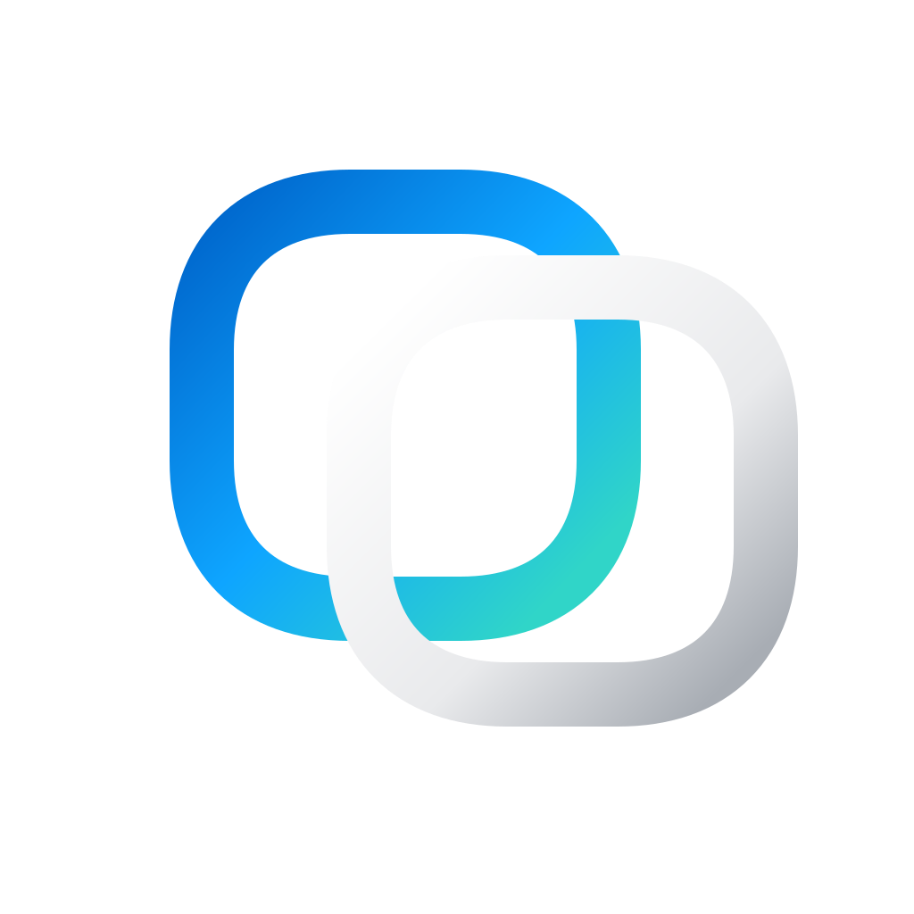

网页图片压缩图片压缩
格式JPG
质量82
元数据清理

万能格式转换器离线专业版批量图片、PDF、Word、Excel 和音视频任务统一进入本地队列。每个任务都会写入独立结果文件夹。

| 文件 | 工具 | 输出 | 状态 | 进度 | 操作 |
|---|---|---|---|---|---|
| 标准表格.xlsx18.4 KB | Excel 转图片 | PNG | 等待 | ||
 在线工具台.png94.3 KB 在线工具台.png94.3 KB | 图片压缩 | JPG | 等待 | ||
 桌面工作台.png54.5 KB 桌面工作台.png54.5 KB | 图片压缩 | JPG | 等待 |
调整界面密度、启动行为和历史记录。
批量结果始终写入独立文件夹，多页文档写入同名子文件夹。
根据电脑性能调整并行任务数量和预览质量。
截图快捷键只在离线专业版运行时生效。
离线版不会上传用户文件，也不会加载在线广告容器。
Windows 离线专业版
图片、文档和音视频处理均在本机完成。软件不提供登录、会员或云端转换能力，也不会接收用户处理文件。
审阅稿不会校验或保存激活信息。